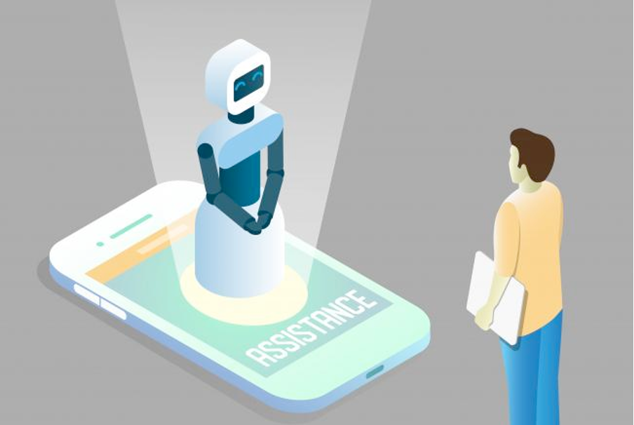

Artificial Intelligence (AI) is rapidly reshaping the landscape of customer service. Contact centers, once dependent solely on human agents, are now integrating AI technologies to streamline operations and enhance service quality. But does this mean AI will replace humans? Or is it more of an evolution in how contact centers operate?

Chatbots and virtual assistants are AI-driven tools that interact with users via text or voice to handle routine inquiries and tasks. They operate 24/7, offering instant responses and guiding customers through simple processes like order tracking, account updates, or appointment booking. Advanced versions can understand context and sentiment, improving the quality of interactions.
Smart IVR systems go beyond traditional menu-based voice systems by using AI and Natural Language Processing to understand spoken language and respond intelligently. They can route calls more efficiently, handle complex requests, and even resolve issues without needing a human agent.
Chatbots can handle FAQs and basic tasks, reducing the need for human intervention.
AI could save businesses up to $80 billion in customer service by 2026.
AI can detect customer emotions in real time by analyzing speech patterns.
AI suggests responses and surfaces data, cutting handling time by 40%.
Up to 25% increase in CSAT scores in AI-enhanced contact centers.
I'm very good at connecting with people
Empathy is my middle name, I always know what to say.
Every frustrated client is an opportunity to demonstrate my professionalism.
Sometimes customers just need to feel heard.